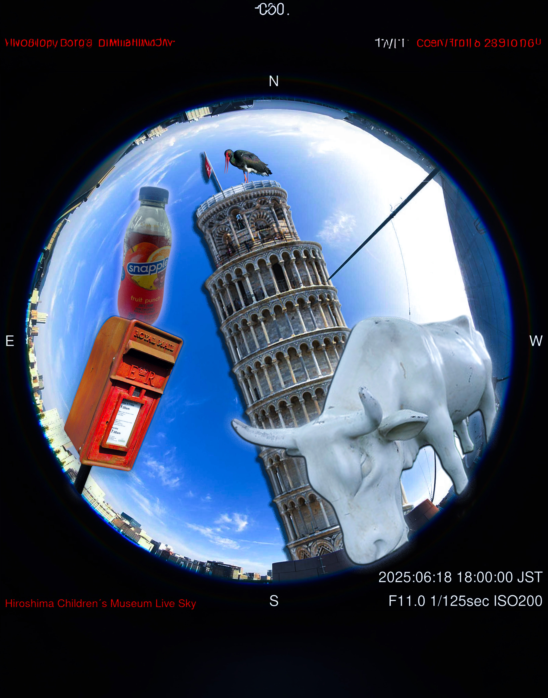
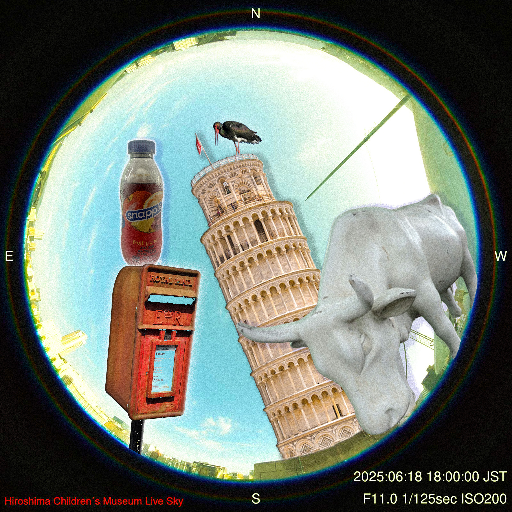
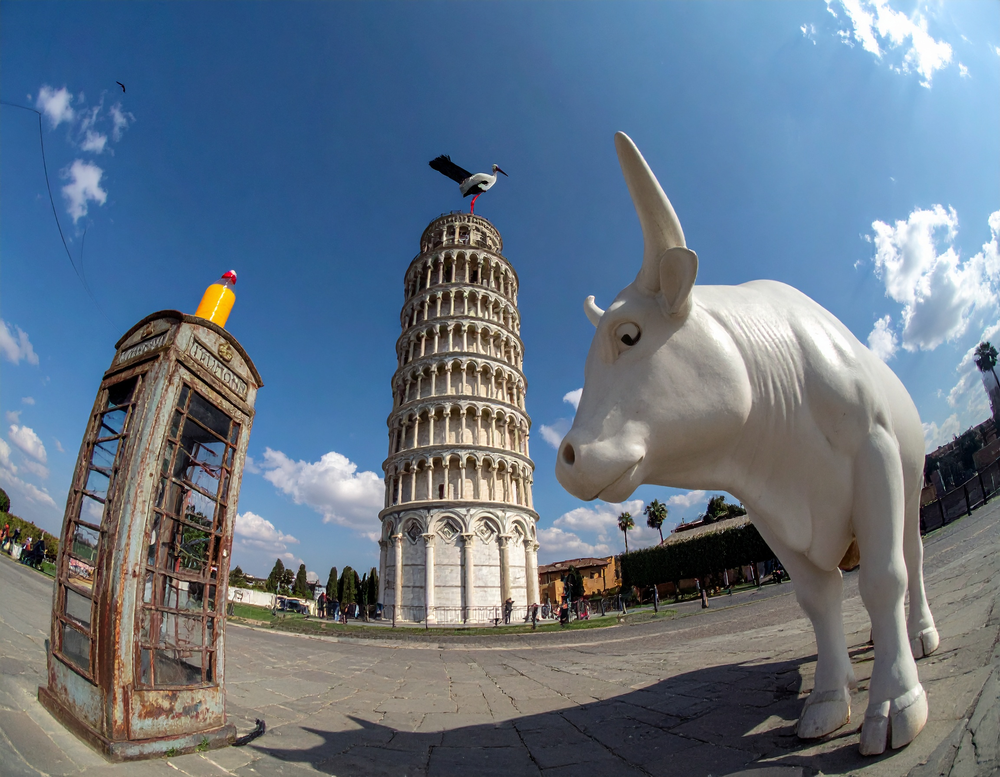

Images Project
Made by Journey Crittendon

ai assisted.

old school, no ai.

fully ai generated content.
I chose to use these images because they seemed fun to put together as a collage. I enjoy high contrasting things and I also love traveling and seeing national monuments and sculptures. I also very much enjoy snapple! So I feel the images were a good representation. I combined about 5 images together for the entire thing. My inspiration was fish eye visuals and crazy proportions, I scrolled on pinterest a bit to see how other people executed it. Old school workflows can be time consuming but it's very detail oriented, I feel like it's a perfectionist's dream to control every aspect of their design. However ai-assited tools do help when a picture doesn’t show enough or for fast masking when you’re in a hurry. I knew I had to be very detailed with my prompt so I tried my best to be, after generating about twice I was kind of impressed. I couldn’t get the eye-level to what I wanted and the proportions didn’t come out as wacky as I wanted but I think it did okay. Staying focused when getting frustrated and not entrley knowing how everything works were the most challenging aspects. There were times where I would play around with different elements but it wouldn’t go on the layer I wanted to. Therefore, figuring out my way around photoshop while doing this was the most time consuming.
Made with Photoshop and Adobe Firefly.